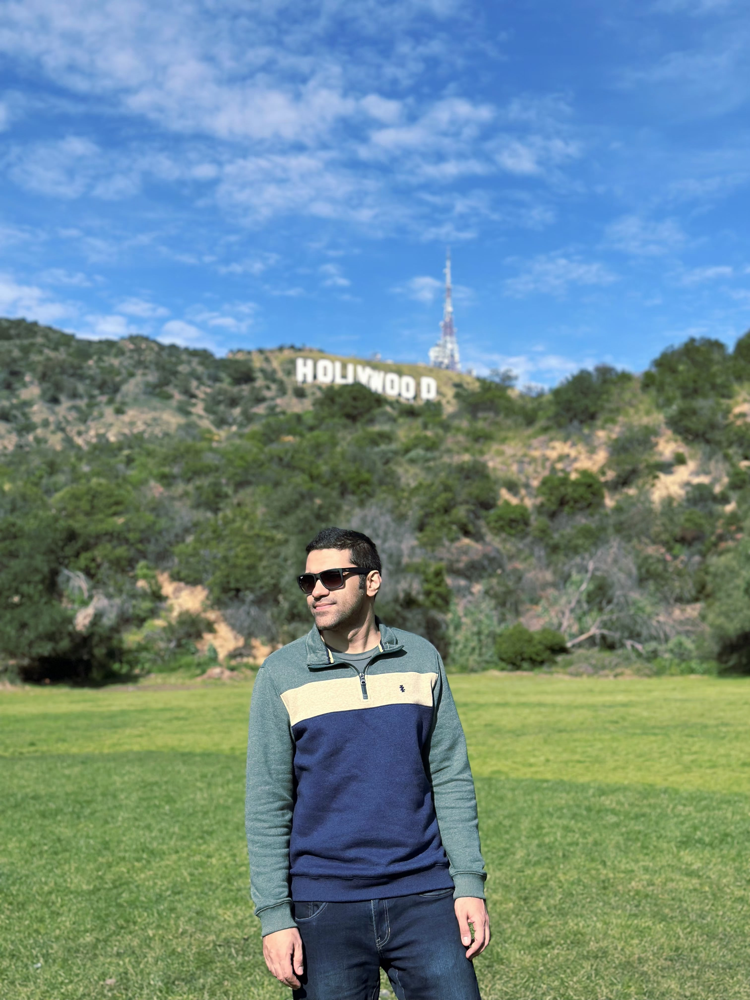

Data Scientist • ML Engineer • PhD Researcher
Hello! I'm a PhD candidate in Data Science and Analytics at the University of Oklahoma with a passion for developing intelligent systems that solve real-world problems. My research focuses on Scientific Machine Learning, Open-World Classification, and time-series analysis of complex systems.
I specialize in building interpretable AI models that incorporate domain knowledge, with applications ranging from brain signal analysis to autonomous robotics. I combine strong theoretical foundations with practical implementation skills to create impactful solutions.

A hybrid framework that automates the discovery of nonlinear dynamics by combining symbolic regression and sparse identification. It generates basis functions automatically, recovering ground-truth equations with 92.8% accuracy even in noisy conditions, and outperforming traditional methods in prediction and simplicity.
Built an adaptive framework for identifying and categorizing previously unseen classes in dynamic environments. Achieved 75-93% accuracy improvement across text, image, and sensor datasets, advancing beyond traditional closed-world assumptions.
Developed a novel algorithm incorporating graph-informed regularization into sparse regression for accurate discovery of network dynamics. Validated on Stuart-Landau oscillator networks with superior performance in identifying complex system behaviors.
Developed multilayer cross-frequency functional connectivity framework for extracting spatiotemporal EEG features. Achieved 15-20% accuracy improvement over baseline methods for early Alzheimer's disease detection.
Architected and deployed a deep learning face recognition system achieving 95-97% accuracy under challenging real-world conditions. Implemented for time-clock systems and service robots with robust data preprocessing pipelines.
Created physics-informed and ML-based path-planning algorithms with novel loss functions for superior obstacle avoidance. Modeled aerial robot formation control with security measures against cyber-physical attacks.
Interactive web application implementing greedy algorithm optimization for resource management. Calculates optimal leveling strategy to minimize coin expenditure while maximizing point gains using efficiency-based decision making.
A collection of projects including a movie database console app, predictive analysis of cancer gene expression, credit card fraud detection, HR analytics on employee attrition, and student performance analysis.
Pursuing a PhD in Data Science and Analytics while working as a Research and Teaching Assistant.
Completed an MS in Electrical and Computer Engineering while contributing to robotics and ML research.
Earned a BS in Electrical Engineering, gaining foundational experience in software development.
I'm currently pursuing my PhD at the University of Oklahoma and always interested in research collaborations, innovative projects, and opportunities in AI/ML. Let's connect!